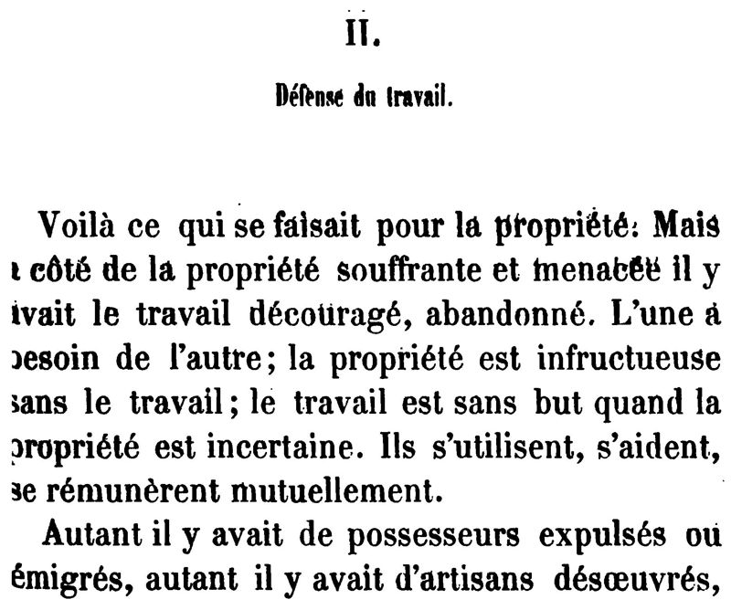
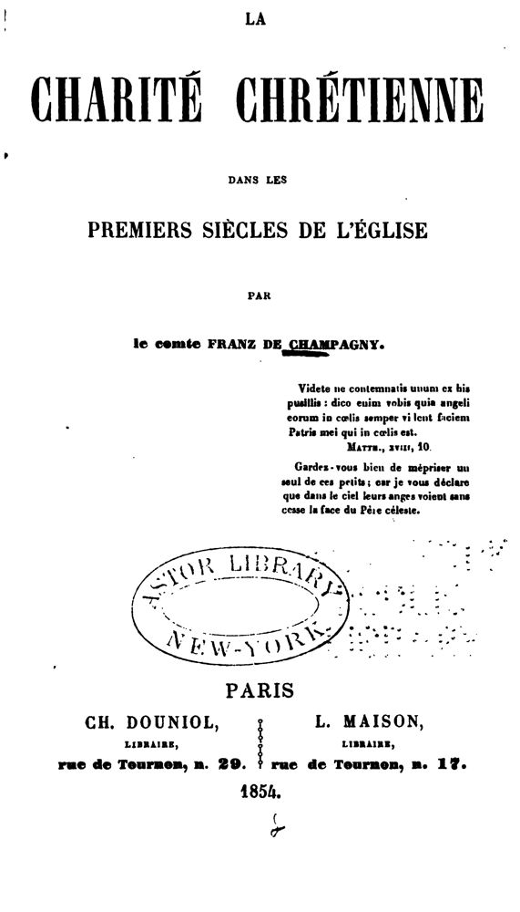
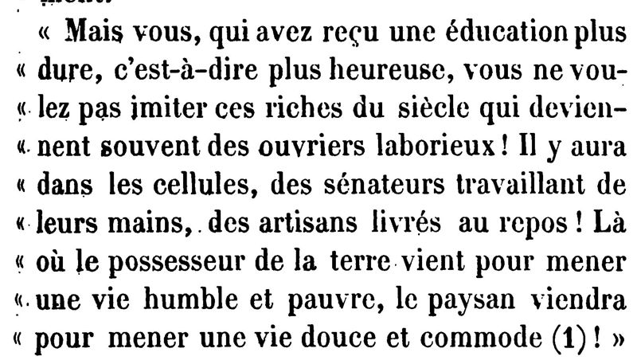

“Défense du travail” (pp. 275–289)
French: Paris 1854, ch. “Lutte contre la misère”, § II, p. 275, scan n294.


II. In defence of labour.
That is what was done for property. But beside suffering and threatened property there was labour, discouraged and abandoned. Each needs the other: property is fruitless without labour; labour has no aim when property is insecure. They use, help and reward each other. For every owner driven out or emigrated, there was an artisan with nothing to do …
Original French
II. Défense du travail.
Voilà ce qui se faisait pour la propriété. Mais à côté de la propriété souffrante et menacée il y avait le travail découragé, abandonné. L’une a besoin de l’autre; la propriété est infructueuse sans le travail; le travail est sans but quand la propriété est incertaine. Ils s’utilisent, s’aident, se rémunèrent mutuellement. Autant il y avait de possesseurs expulsés ou émigrés, autant il y avait d’artisans désœuvrés …
Lecky’s ch. VI note 9 (“Champagny, La Charité Chrétienne, pp. 275–289”) supports his sentence “The Fathers employed all their eloquence in favour of labour”. The range is the whole of this section of Champagny’s book.
Augustine on idle monks: “senators labouring, artisans at rest” (pp. 278–279)
French (Champagny’s translation of Augustine, De opere monachorum, cc. 21–22, with the Latin in his notes): Paris 1854, pp. 278–279, scan n298.

[p. 278] … But tell me, did you come only to take up the service of God? Or, tired of a poor and laborious life, did you not simply seek to be fed and clothed for doing nothing, and honoured besides by those who used to despise you? …
[p. 279] “But you, who had a harder upbringing, that is, a happier one, will not imitate those rich men of the world who often become hard-working labourers! In the cells there will be senators working with their hands and artisans at rest! Where the landowner comes to lead a humble and poor life, the peasant will come to lead a soft and easy one!”
[note] “It is in no way fitting that in this life, where there are senators who labour, there should be craftsmen at leisure; that where those who were lords of estates come, leaving their riches, peasants should be pampered.”
Original French
[p. 278] … Mais, dites-le-moi, êtes-vous venus dans le seul but d’embrasser le service de Dieu? ou bien, las d’une vie pauvre et laborieuse, n’avez-vous seulement pas cherché à être nourris et vêtus sans rien faire, et de plus à être honorés par ceux qui vous méprisaient autrefois? …
[p. 279] « Mais vous, qui avez reçu une éducation plus dure, c’est-à-dire plus heureuse, vous ne voulez pas imiter ces riches du siècle qui deviennent souvent des ouvriers laborieux! Il y aura dans les cellules, des sénateurs travaillant de leurs mains, des artisans livrés au repos! Là où le possesseur de la terre vient pour mener une vie humble et pauvre, le paysan viendra pour mener une vie douce et commode! »
[note] Nullo modo decet, in hâc vitâ ubi sunt senatores laboriosi, sint artifices otiosi; quò veniunt relictis divitiis qui fuerunt prædiorum domini, ibi sint rustici delicati. Ibid., 22, 25.
Champagny is paraphrasing and translating Augustine’s treatise On the work of monks; the Latin of the footnote is given as Champagny prints it, read on the page image. Lecky does not quote this passage, but it is the most vivid evidence in the pages he cites.
Further down the rabbit hole
Sources that Lecky cites in the notes next to the ones that cite this page.
- Eden, The State of the PoorBecket’s harvest labour, the 1102 law and Irish slaves
- Hume, Of the Populousness of Ancient NationsHow exposing children might have raised population
- M’Culloch, Principles of Political Economy and the Wealth of NationsFoundlings, Calvin on interest, and Scotland’s last serfs, in a Victorian economist’s footnotes
- Van Bruyssel, Histoire du commerce et de la marine en BelgiqueThirty kingdoms trading with Flanders, and a friar who called murder ‘meritorious’
- Hallam, View of the State of Europe during the Middle Ages, vol. 1Hallam quoted, with three small changes
- Storch, Cours d’économie politiqueA tutor to the Russian grand dukes on usury laws that backfire


Backlinks
Every place in Rationalism in Europe that links to this page (generated automatically when the site is built).